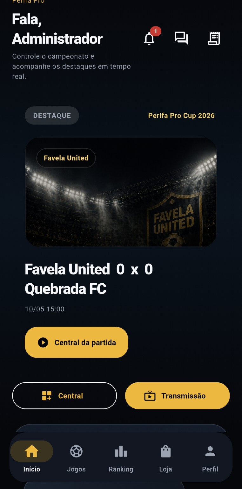
Experiência mobile do campeonato
Início com jogo em destaque, agenda, classificação, loja e navegação inferior.
Plataforma para campeonatos, jogos, ranking, marketplace e comunidade em uma base multi-tenant com painel web, API própria e expansão mobile.

Experiência mobile do campeonato
Início com jogo em destaque, agenda, classificação, loja e navegação inferior.
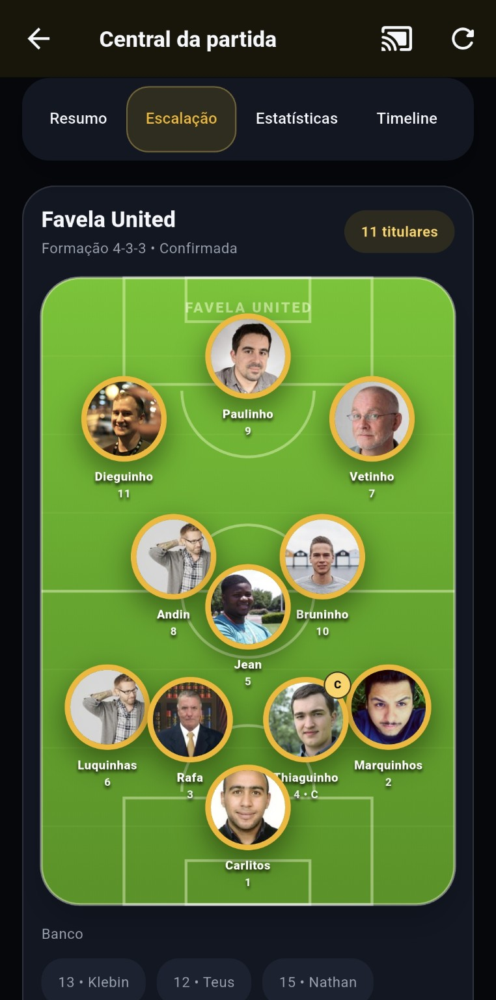
Escalação
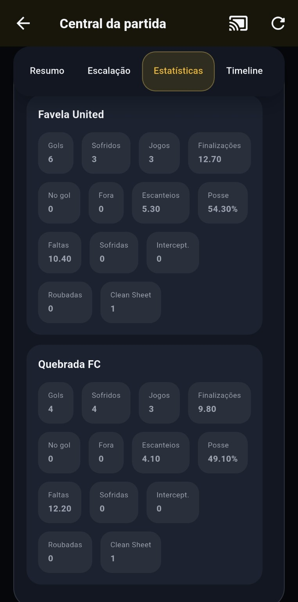
Estatísticas
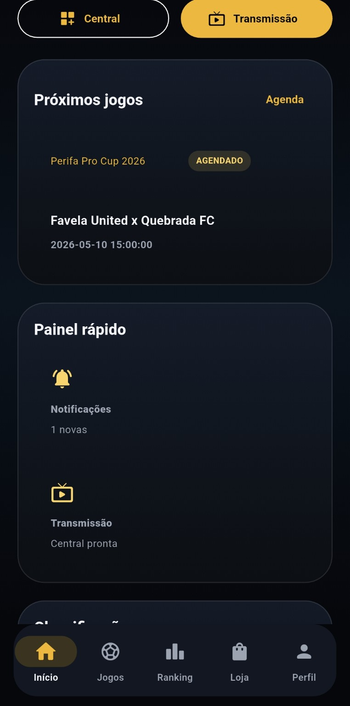
Próximos jogos
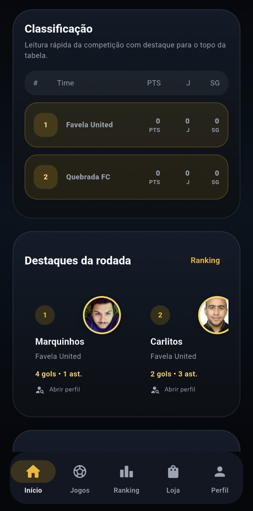
Classificação
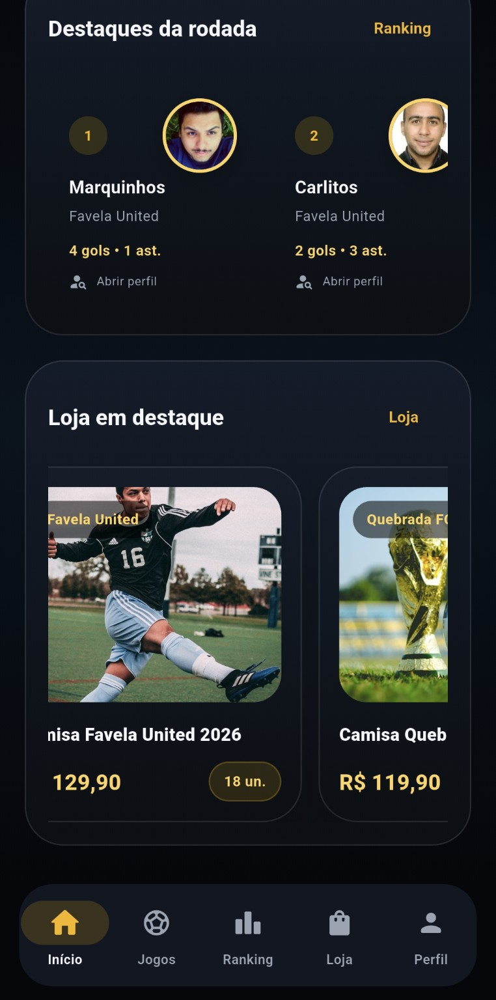
Loja

Agenda
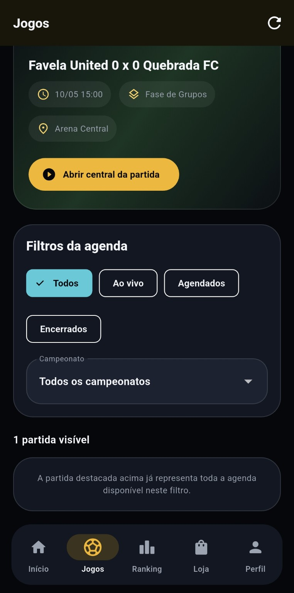
Filtros
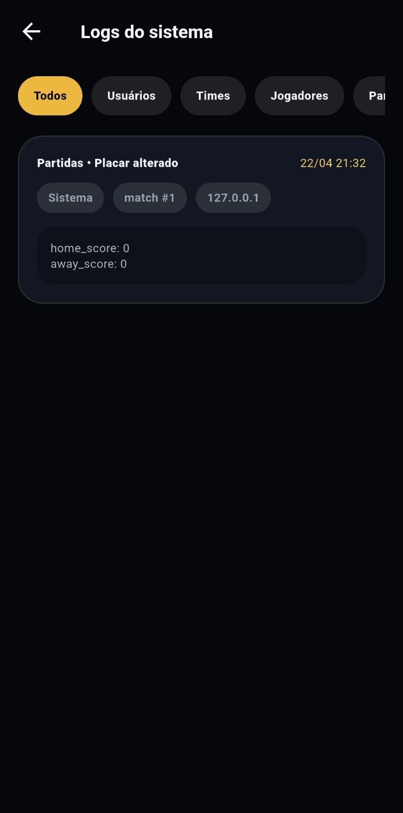
Logs
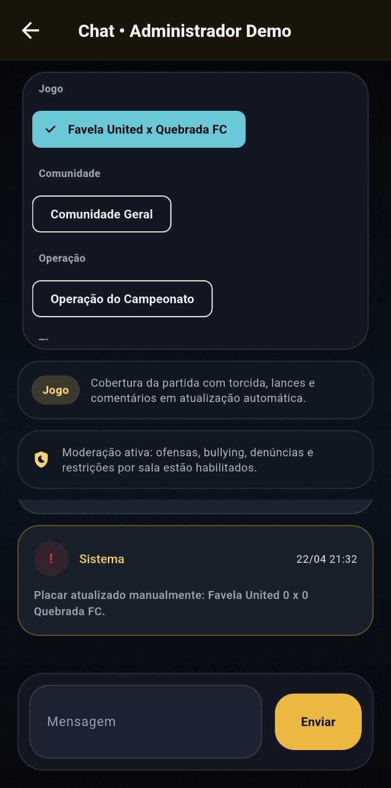
Chat
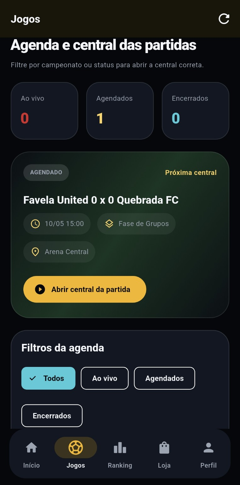
Lista de jogos
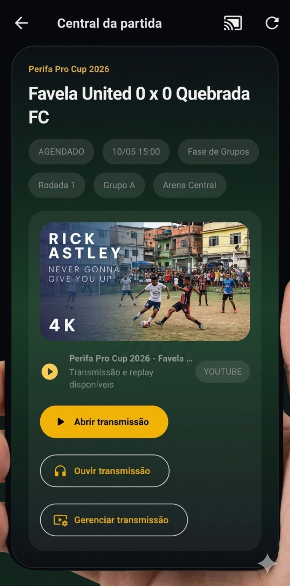
Transmissão
Ligas, arenas, organizadores e operação esportiva que precisa unificar campeonato, times, jogos, loja e comunidade em um produto só.